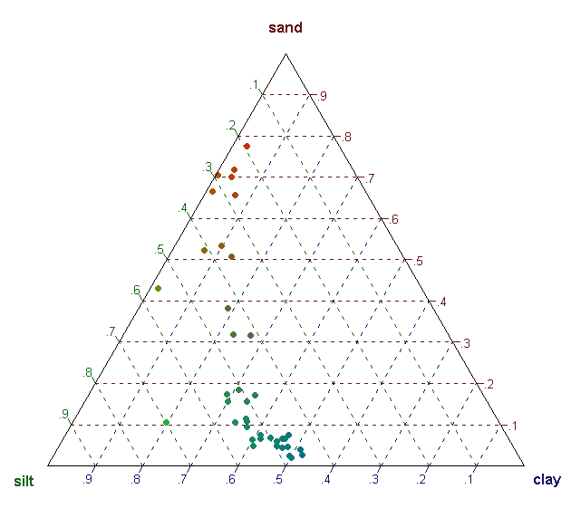

Dirichlet Regression
Dirichlet regression can be used to model compositional data, when the dependent-Y variable is practically a sum total of contribution from multiple components.
Introduction
Dirichlet regression can be used to predict the ratio in which the sum total X (demand/forecast/estimate) can be distributed among the component Ys. It is practically a case where there are multiple dependent ‘Y’ variables and one predictor X variable, whose sum is distributed among the Ys .
A couple of possible real-world examples could be as follows:
Total demand of a product A in a multi-facility manufacturing organization is actually a sum of demand of product A from n individual factories of the organization. Given the total demand, we are interested to know in what proportions the n factories contributed.
The total car sales in the US is a sum of car sales from 50+ individual car brands. In case we know the total projected car sales in the US, the proportional contribution from the individual brands can be predicted using Dirichlet regression.
The demand of a product is actually the sum total of demand of 4 different models (variants) of the same product.
In either case, the dependent Y variables, which are the contributions from each component, should be converted to fractions summing up to 1. It is the job of DirichReg() to predict these fractions when the sum total X is known.
The code shown below can model, predict and visualize multiple Y Variables
1. Data Preparation
Prepare the test and training samples. Make the dirichlet Reg data on Y’s.
library (DirichletReg)
inputData <- ArcticLake # plug-in your data here.
set.seed(100)
train <- sample (1:nrow (inputData), round (0.7*nrow (inputData))) # 70% training sample
inputData_train <- inputData [train, ] # training Data
inputData_test <- inputData [-train, ] # test Data
inputData$Y <- DR_data (inputData[,1:3]) # prepare the Y's
inputData_train$Y <- DR_data (inputData_train[,1:3])
inputData_test$Y <- DR_data (inputData_test[,1:3])2. Train the model
# Train the model. Modify the predictors as such.
res1 <- DirichReg(Y ~ depth + I(depth^2), inputData_train) # modify the predictors and input data here
res2 <- DirichReg(Y ~ depth + I(depth^2) | depth, inputData_train, model="alternative")
summary(res1)
#> Call:
#> DirichReg(formula = Y ~ depth + I(depth^2), data = inputData_train)
#>
#> Standardized Residuals:
#> Min 1Q Median 3Q Max
#> sand -1.6372 -0.8499 -0.4344 1.0560 2.2233
#> silt -1.0645 -0.5042 -0.0898 0.1858 1.5665
#> clay -1.5058 -0.6494 0.0081 0.5867 1.7450
#>
#> ------------------------------------------------------------------
#> Beta-Coefficients for variable no. 1: sand
#> Estimate Std. Error z value Pr(>|z|)
#> (Intercept) 1.8089738 1.0414098 1.737 0.0824 .
#> depth -0.0220478 0.0458691 -0.481 0.6308
#> I(depth^2) 0.0002771 0.0004098 0.676 0.4988
#> ------------------------------------------------------------------
#> Beta-Coefficients for variable no. 2: silt
#> Estimate Std. Error z value Pr(>|z|)
#> (Intercept) 4.641e-01 1.124e+00 0.413 0.680
#> depth 4.355e-02 5.463e-02 0.797 0.425
#> I(depth^2) 2.064e-05 5.078e-04 0.041 0.968
#> ------------------------------------------------------------------
#> Beta-Coefficients for variable no. 3: clay
#> Estimate Std. Error z value Pr(>|z|)
#> (Intercept) -1.5520413 1.1244396 -1.380 0.168
#> depth 0.0874478 0.0578113 1.513 0.130
#> I(depth^2) -0.0002161 0.0005433 -0.398 0.691
#> ------------------------------------------------------------------
#> Significance codes: 0 '***' 0.001 '**' 0.01 '*' 0.05 '.' 0.1 ' ' 1
#>
#> Log-likelihood: 80.66 on 9 df (183 BFGS + 2 NR Iterations)
#> AIC: -143.3, BIC: -131.7
#> Number of Observations: 27
#> Link: Log
#> Parametrization: commonAs you can see from the summary results, the β coefficients for the Xs are computed to predict each of the Ys.
3. Fitted and Forecasts
# Predict On Training Data: Fitted Values
predict(res1) # Model 1 fit
#> sand silt clay
#> [1,] 0.38244831 0.4564125 0.16113919
#> [2,] 0.43736620 0.4285154 0.13411836
#> [3,] 0.15978409 0.5177743 0.32244164
#> [4,] 0.58529627 0.3386196 0.07608417
#> [5,] 0.23630422 0.5094430 0.25425275
#> .
#> .
predict(res2) # Model 2 fit
resid(res1) # Residuals
# Predict On Test Data or Forecast
predicted_res1 <- predict(res1, inputData_test) # Model 1
predicted_res2 <- predict(res2, inputData_test) # Model 24. Visualize
# Plot
plot(DR_data(predicted_res2)) # plot test Data on model 2
# additional plots
plot(inputData$Y)
This page is based on the examples available in Dirichlet regression vignette and details about the implementation are available in here.